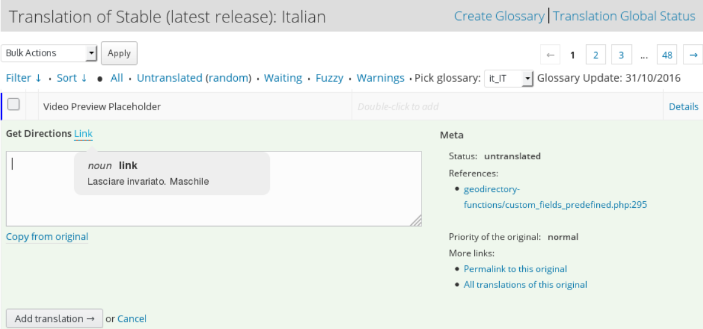

Why your community need a glossary for localization
2 Edition
Created by Daniele Scasciafratte / @Mte90net
Daniele Scasciafratte
- Co Founder Codeat - Full Stack Developer
- Mozillian & Mozilla Reps & Mozilla Tech Speaker
- WordPress Core Contributor/Developer
- Project Translation Editor for WordPress Italia
- GlotDict, PTEbot, BulkRejectGP author
- Open Source Multiversal
Language learning issues

160 locales with 72 languages
Mozilla Firefox has 93 languages
- 23/08/2016 - Start with the 1 Edition survey
- 29/10/2016 - Mozilla Festival
- 12/11/2016 - Global WordPress Translation Day
- 03/04/2017 - Start with the 2 Edition survey
- 14/05/2017 - Oscal 2017
- 16/06/2017 - WordCamp Europe
1 Edition results
- 25 participants
- 16 languages

2 Edition results
- 33 participants
- 20 languages
Few questions for you
- How many native english speaker?
- How many languages do you speak?
- How many of you localize a project in a community?
- Do you use WordPress?
- There are 10000 translators with 47% of sites that not use English
How many use an official glossary?
- 24 of 25 use the official glossary of their community
- 28 of 33 use the official glossary of their community
- 12 don’t use the glossary during the translation (maybe they remember it)
- Only 1!
- 5 of 25 have also their personal glossary
- 4 of 33 have also their personal glossary
Your community has translation rules?
- 24 of 25 have community rules
- 30 of 33 have community rules
- 1 doesn't know
- 1 say that is not strictly
- 1 doesn't use the community rules
- 2 have also their own
Lesson learned

The glossary is a very much valuable tool of the translators, but only if strictly!
Where to start?
Create a process to suggest new terms for a glossary or start from a glossary of another community.
Don't forget to do meetings to discuss the terms suggested because motivate people to share their thoughts and create rules for all.
Terms that create problems
Sole in Italian is Sun but means also Only, and Moto is the motorcycle but means also movement
There are some English terms that are difficult to translate in your language?
What are the terms that create problems?
https://pastebin.com/E3zNErBK
What can I do with this list?
Create a glossary with this terms if you don't have one is a starting point for the WordPress polyglots world.
The common behaviour is to leave or translate following the context and creating many items of the same term.
What are the terms that we cannot translate?
https://pastebin.com/fKa59FsQ
What can I do with this lists?
Often tech terms don't have the alternatives in other languages and the right choice it is to not translate them!
The second step to translate where it is possible.
Technical area not often translated by Polyglots
- wp-config.php & Readme.txt
- Highly updates rate
- Codex & Docs
- Changelog
- Licenses
- Name of plugins or themes
- Critical errors
- Resources for manager/leader
- Available unlucky technology on SVN or Git
Don't forget...
- Technical terms are the kryptonite of a IT Translator
- You will pass many hours in discussion about how to translate a term
- Define the priority of documents and area
- Define the terms for area like: Developers, Features etc.
- Choose the area of terms that you not translate in any case
Feedbacks by communities
- With few items the glossary is useless
- Rules and glossary helps new contributor to start easy with a solid base and speed up the onboarding
- Actually is missing an officially way to report terms for glossary
- Consistency to maintain terms between different translators and a reference
- A wrong translation on the 29% websites can create problems on business as example
- A translation with quality is better of a translation crappy
- Consistency and Rules simplify many things and improve the quality
Why you need a glossary?
- Mentors can work on rules after the glossary
- Resources are often the best way to check the community healthy, to be part of something bigger and join community meetings
- First step for onboarding new volunteers
- Involve new volunteers in the community life
- Simplify the review (free time to have for… ehm translate?)
- "Lot of synonyms and every user is accustomed to use different words.”
- “As GTE I can't rely only in a closed Glossary”
- Define the translation style!
GlotDict
or how to access easily your glossary
Satisfaction
Very amazing yesterday (Italian WordPress Translation Day at the WP Rome Translation Day), when I installed the plugin that I translated saturday and I saw my translation!
Satisfaction
How much the time fly very fast translating WordPress!
THE END
- Replies on the module: https://goo.gl/0rHA1q - How to structure a l10n project for open source projects: Mozilla Italia l10n Guide